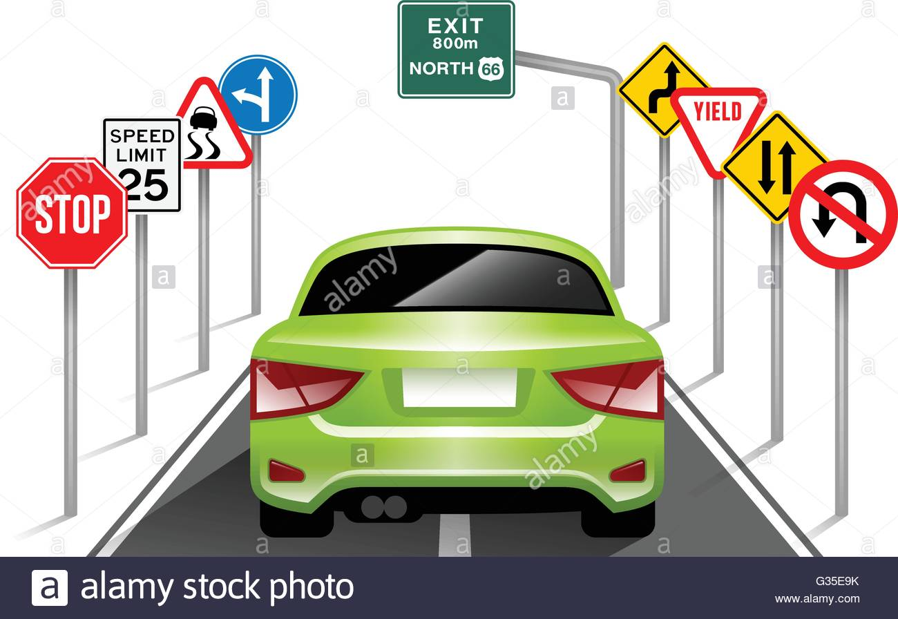
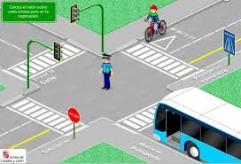
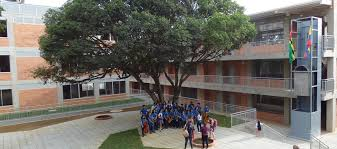

FALTA DE SAÑALIZACIONES E IGNORANCIA DE LA EDUCACION EN LA MOVILIDAD
A continuacion vas a encontrar un proyecto de educacion vial creado por:
Ricardo Andrés Quitian
María mariellys Rossell
María Fernanda solano
Keilly Johana zambrano
11-5
Escuela normal superior Bucaramanga
2020
DIAGNOSTICO:
SEÑALIZACION
Tras realizar indagaciones sobre la señalización que indicara: maneras correctas de transitar, planos de las infraestructuras, puntos de encuentro y rutas de evacuación en caso de emergencia. Pudimos identificar falencias sobre la señalización en la zona antigua del colegio. En la infraestructura nueva construida en la zona oriental de la institución consideramos que la señalización es apropiada, ya que en cada edificio se encuentra un plano donde se ubican cada una de las aulas contenidas allí y las rutas de tránsito y evacuación, además, están ubicadas en lugares estratégicos donde toda la población estudiantil puede notarlas.
Sin embargo, el panorama en los edificios antiguos de la institución no es el mismo ya que, no se encuentra la señalización suficiente y la escaza que existe es demasiado antigua, dificultando así la claridad de información que está contenida en la señal y su visualización por los miembros de la comunidad educativa.

MOVILIDAD
En cuanto a educación en la movilidad, encontramos que estudiantes de grados menores de la secundaria no siguen normas para la correcta movilidad dentro de la institución, esta población estudiantil deambula por corredores, pasillos y escaleras sin ningún cuidado provocando que la movilidad de los demás estudiantes se haga dificultosa y extremadamente pasiva.
En cuanto a estudiantes de primaria creemos que se debe tener mayor control ya que la imprudencia de los niños al movilizarse sobre todo en horas de descanso, más allá de provocar problemas de movilidad con otros estudiantes, puede desencadenar un accidente.
Finalmente, en cuanto al área de preescolar, consideramos que esta población estudiantil cuenta con la atención y cuidados necesarios por parte de los maestros quienes los guían y acompañan cada vez que tienen que movilizarse por la escuela, de manera que su transito es correcto, ordenado y no genera problemática alguna.

INTRODUCCION:
En el presente proyecto se desarrollara, presentara y evidenciara la investigación y análisis del problema correspondiente a la falta de señalizaciones en la ENSB y la ignorancia en cuanto a la educación en la movilidad por parte de los estudiantes ya que a la hora de desplazarse/movilizarse en la institución se presentan falencias debido a que la mayoría de los estudiantes desconoce las rutas válidas y pertinentes en el momento subir o bajar las escaleras, recorrer los pasillos, accesos de salida-entrada y demás rutas. Así como también transitan sin aplicar normas para la correcta movilidad peatonal ( Ej: Transitar por la derecha, No correr por los pasillos, corredores ni escaleras, transitar a una velocidad moderada, etc).
Tras analizar las situaciones mencionadas consideramos que una posible solución es la incrementación de señalizaciones y visibilidad de las mismas para mejorar el flujo en función de lugares altamente transitados y que desarrollaremos según el cronograma planteado.
Para finalizar, en este proyecto podremos apreciar la importancia de una correcta movilidad en los diferentes caminos/rutas y accesos con su correcta señalización y concientización.
JUSTIFICACION:
Este problema de investigación inicia como proyecto de área y nuestro problema específicamente es elegido tras observar que es uno de los problemas que más aquejan a la comunidad educativa de la ENSB y al observar que la mayor cantidad de respuestas obtenidas en las encuestas previamente realizadas, arrojan que en la Escuela Normal Superior de Bucaramanga los niños, niñas y adolescentes no saben el uso y significado correcto de las señales de movilización, como por ejemplo la de evacuación en caso de emergencia, los puntos de control de la institución, e incluso avisos tan simples como los de “piso mojado”, estos y muchos más que pueden ocasionar graves accidentes desde los más pequeños hasta los más grandes. Es por esto que consideramos de suma importancia estudiar y encontrar posibles soluciones para las problemáticas en cuanto a movilidad dentro de la institución que se han venido presentando y que involucran a todos los miembros de la comunidad educativa, de manera que educaríamos a la comunidad en normas que como peatones debemos seguir y resolveríamos los problemas a la hora de transitar.

PLANTEAMIENTO DEL PROBLEMA:
La falta de señalización y desconocimiento sobre la correcta manera de movilizarse por parte de los estudiantes en el establecimiento institucional pueden generar que la población se descontrole y hallan accidentes desde los más leves a los más graves como la caída de escaleras o una simple caída que haga un raspón pero aun así la integridad de la persona se pone en peligro cuando no sabe transitar por un espacio público y más si es un establecimiento reducido o tal vez amplio pero con demasiada población como lo es la E.N.S.B la correcta señalización en baños, canchas, cafeterías ( por las filas y los que se acolan), pasillos, entradas y salidos del establecimiento educativo, etc.
Por otra parte, inculcar en los estudiantes desde pequeños como movilizarse en la institución y que significan las señalizaciones para que sepan como movilizarse por el lugar correctamente todo esto con el fin de evitar accidentes, en este proyecto trataremos de ponerle solución al problema anterior.
OBJETIVOS:
Hallar una forma de implementar la correcta señalización en la institución
Saber cuántos estudiantes saben movilizarse en la escuela
Conocer cuántos estudiantes no saben movilizarse en la escuela
Hacer que los estudiantes sepan movilizarse en los espacios de la escuela.
ANTECEDENTES DE INVESTIGACION CIENTIFICA:
Al ser peatón, no hay nada que proteja nuestro cuerpo. Por ello, nuestros sentidos son la principal herramienta para controlar el peligro en la calle. Tanto audición como visión, deben estar pendientes de lo que sucede en nuestro camino, ya que nos permiten esquivar obstáculos y situaciones de peligro.
Recordar que pisos mojados o escaleras pueden representar un peligro mayor y que por ello debemos tener más precaución en estos lugares puede salvarnos de accidentes, que, aunque no parezca son más comunes de lo que parecen. Usar siempre el pasamos y mantener la otra mano libre para que poder sujetarnos en caso de tropezar puede evitar una caída que podría desembocar en un infortunado accidente.
Se ha demostrado que los accidentes peatonales son mucho más comunes de lo que parecen y sus causas varían, en muchos de los casos, estos accidentes se presentan porque los peatones: presentan distracciones (en muchos casos al transitar mirando el celular), ignoran señalizaciones, se movilizan a velocidades no apropiadas y no tienen en cuenta las ‘normas del buen peatón’